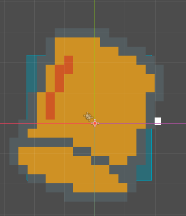
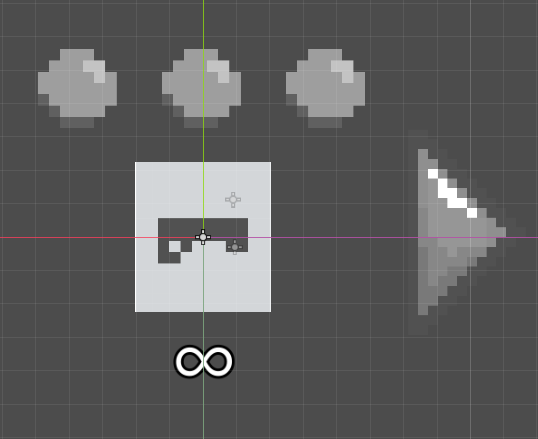
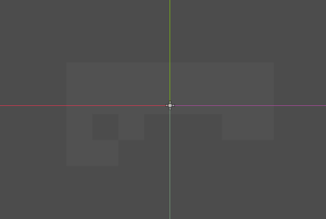
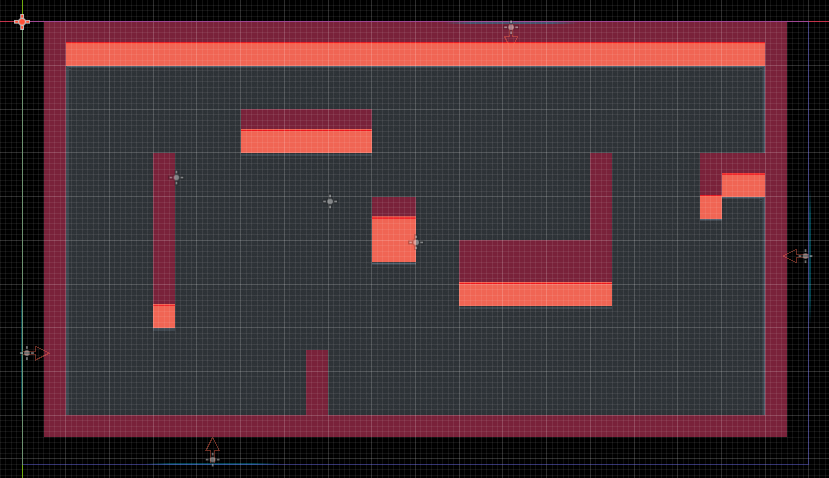
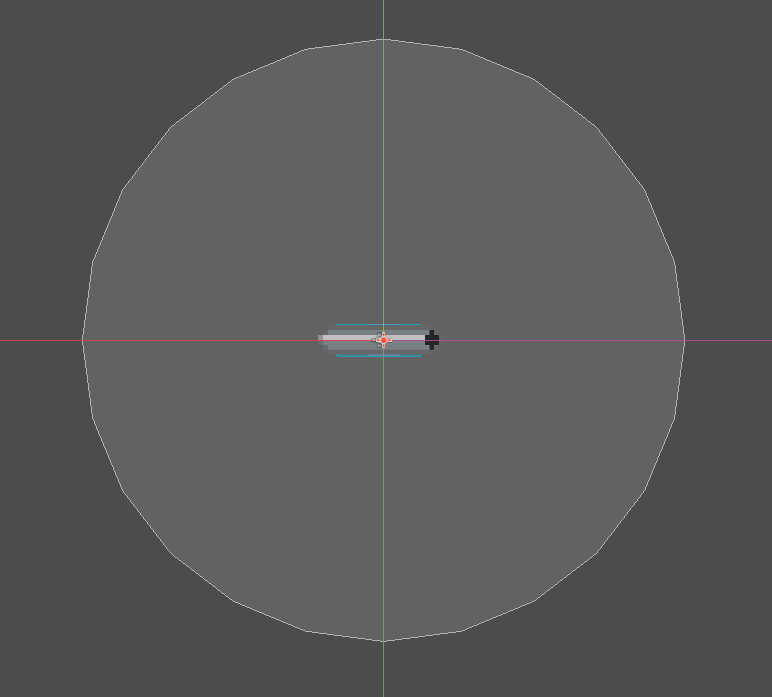
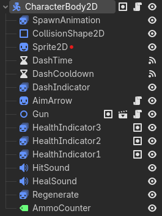
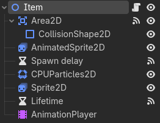
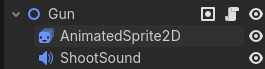
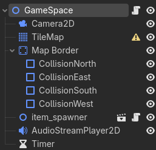
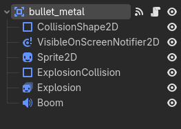

Check the icons to see the individual parts of the game!
Item Box

The Player

Basic Gun

Game Space

Metal Pipe

Legend: = Node2D | = CharacterBody2D | = Area2D
Scene: One cohesive group of objects that can be run independently from anything else.
Node(s): Godot's prebuilt object system that provide various functions, like displaying images or playing audio, determined by the node's type. All scenes are made using combinations of nodes.
Root Node: The node that the scene is based around.
Script: Programming that can be attached to any node, modifying its behavior.
Scene view
Scene nodes

The player character is one of the most ubiquitous designs in video games. In this top down, twin stick shooter game, the player scene was made relatively simple. Its main functions include moving around, recognizing collision for walls, bullets and items, and using a weapon.
In this scene, the root is a "CharacterBody2D" node, which provides prebuilt functionality for player movement, with the rest of the nodes consisting of visuals, timers, and audio handling.
The one exception is the Gun node, which is its own scene. This means that the gun can exist on its own, making variations of it much easier. Without its own scene, you would need multiple variations of the player character just to make new weapons!
As this is a multiplayer game, the player scene is spawned in multiple times, a good example as to why modular design like scenes work well in games. In order to differentiate, the CharacterBody2D script stores its own player number and color. The player is actually colorless in its scene because the color is added upon loading into the game as the color is unique per instance of the scene.
Scene view
Scene nodes

This is a relatively simple scene. It has a sprite, some timer nodes, collision, and a particle spawner. The root is a generic Node2D that only determines its position.
The item only serves to give a player a random weapon on collision. The spawn delay timer says when the item can be touched, and the lifetime timer says when it should be destroyed.
This scene is actually a little more interesting in the way it is spawned in, or more formally, instanced. A separate, invisible scene with no sprite called item_spawner creates this item scene on random positions on the map on random intervals.
The item_spawner also determines what weapon the item contains, setting a variable inside the item script to store it.
Scene view
Scene nodes

The basic gun scene that is included with player. Most of its functionality is done through the script attached to the root Node2D.
While this scene is incredibly basic and only has an audio node outside of the root, you may expect that the script attached has to be complex in order to to provide the functionality of a gun, like ammo, determining the bullet, and even avoiding hitting the user.
However, much of the code is inherited through a separate abstract gun script, which helps determine the structure of a gun. This allows the creation of multiple gun types, which only need to then write special functions for that type of gun.
As a note, the bullet is its own scene as the gun is spawning them in. While it could have been implemented in the same scene, the added modularity of separating the scenes allow for better reuse.
Scene view
Scene nodes

The game space scene is a very important part of the game. Here, all of the individual parts come together to have a cohesive, fun game.
Here, the tilemap node creates the visible map itself, alongside its functional collision. This is also where the item_spawner scene exists, as mentioned with the Item scene
In this multiplayer game, there is a variable amount of players that is possible, so instead of pre-including the player scenes within the game space, they are spawned in using a script instead.
The game space script also determines when the game ends by counting players left, and helps to set up controller bindings on player spawn in.
Scene view
Scene nodes

This is a metal pipe explosion, an effect of one of the weapons that you can get randomly from an item box.
Unlike a generic Node2D, the root Area2D node specifies that it wants a CollisionShape to determine what that area is. These areas are used generally for basic collision detection. They do not use advanced physics processes, just detect whether a collision has happened with another shape. As such, it was useful to base all projectiles on this node as they only need to be detected by players, and collide with walls.
In this case, the metal pipe is a special weapon that explodes on impact with walls. When first thrown, the metal pipe has a smaller hitbox of just the pipe itself. The large circle area you see is only activated on collision, playing the Explosion AnimatedSprite2D node you see in the scene tree on the right.
Most of the script borrows from the abstract bullet script, defining functions like movement and collision with players. So, the metal pipe script only has to define its special explosion effect.
Copyright © 2026 TinjTeam. All rights reserved.
Hosted on GitHub Pages